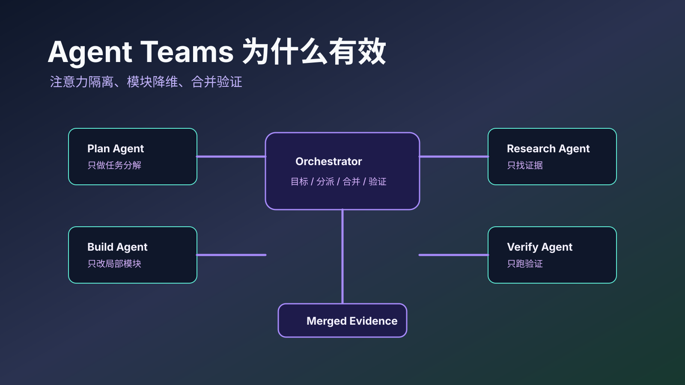

Agent Teams 为什么有效
多 Agent 不是把同一个模型多开几份，也不是给系统加几个“人格”。它有效的地方，是把一个会互相稀释的上下文问题，拆成几个更窄、更干净、更容易验证的工作单元。
复杂任务不是信息越多越好。一个 Agent 同时负责需求、架构、编码、测试、文档和发布，很容易在同一个窗口里把角色、证据和目标搅在一起。Agent Teams 的价值，是让每个工作单元只面对一个足够小的世界。

注意力需要降维
考虑一个频谱分析的类比：复杂任务像一段混合信号，包含多个频率分量叠加。单 Agent 试图同时处理所有频率，相当于用一个宽带滤波器——信噪比低，各分量互相干扰。多 Agent 相当于用一组窄带滤波器，每个只提取自己负责的频段，互不干扰，最后再合成输出。
模型的注意力也有这个问题。任务越大，上下文里越容易同时出现目标、反例、日志、旧方案、失败尝试、代码片段和用户补充。它们都在争夺同一个窗口里的注意力。多 Agent 的第一层收益，就是把同一团上下文切成几个局部上下文。
flowchart TB
U[用户目标] --> O[Orchestrator: 保持全局目标]
O --> P[Planner: 只做计划]
O --> B[Builder A: 模块实现]
O --> R[Researcher: 文档与源码检索]
O --> V[Verifier: 测试与审查]
P --> O
B --> O
R --> O
V --> O
O --> M[合并: 摘要 / diff / 测试证据]阶段拆分让角色线性化
第一种降维是阶段拆分。Plan 阶段只决定做什么，不写代码；Build 阶段只实现已确定的任务，不重新发明需求；Verify 阶段只验证和反馈，不顺手重构。
这种拆分看起来像传统软件工程的老纪律，但对 LLM 更关键。因为模型很容易在一个回答里同时“规划、实现、解释、补救、总结”，每一层都像合理行动，合在一起却会失控。阶段拆分把它从多目标优化拉回单目标优化。
Anthropic 的 building effective agents 里把 workflow 和 agent 区分得很清楚：workflow 是预定义路径，agent 是模型自己决定路径。多数工程任务不需要一上来就让模型自由规划一切。先把稳定的阶段流程固定住，通常比直接开多 Agent 更可靠。
模块拆分让上下文变小
第二种降维是模块拆分。一个 CRM 系统不能一句话生成，但“客户标签模块”“导入校验模块”“权限检查函数”“报表导出适配器”可以分别定义、实现和测试。
模块拆分的关键不是切得越碎越好，而是每个模块都有独立边界：输入输出清楚，依赖清楚，不变量清楚，测试清楚。这样的模块适合交给不同 Agent 并行处理，因为它们不需要共享全部上下文。
一旦模块之间耦合很强，多 Agent 的优势会迅速被 merge 成本吃掉。多个 Agent 同时改同一个核心抽象，最后合并者要读懂所有局部假设，成本可能比单 Agent 还高。
子 Agent 的本质是上下文隔离
本博客前文已经专门写过 子 Agent 的本质。这里补一个更直接的判断：子 Agent 不是低配模型，也不是工具函数，而是一个有独立上下文窗口的工作者。
独立上下文带来三件事。第一，执行细节不会污染协调者的全局视野。第二，子任务可以从干净窗口开始，不背主会话里的历史噪声。第三，子任务结束后只把摘要、diff、测试结果和关键证据交回去，丢掉中间的失败轨迹。
这也是多 Agent 能省注意力的根本原因。它不是减少总 token，很多时候还会增加总 token；它减少的是同一个窗口里的冲突信息。
多 Agent 不是免费午餐
Anthropic 的 multi-agent research system 文章给过一个醒目的数字：在内部研究评测中，多 Agent 系统比单 Agent Claude Opus 4 高 90.2%。但同一篇文章也明确提醒，多 Agent token 消耗显著更高，普通 Agent 大约是聊天的 4 倍，多 Agent 可到 15 倍。
这个数字很适合降温。多 Agent 的优势不是“总是更聪明”，而是在任务天然可拆、信息源分散、探索方向独立、汇总标准明确时，让多个上下文并行工作。相反，如果任务依赖强共享状态、实时协商、统一审美或单一核心抽象，多 Agent 可能只是更贵的混乱。
| 适合多 Agent | 不适合多 Agent |
|---|---|
| 多信息源调研 | 单文件小修 |
| 多模块并行开发 | 强耦合核心抽象设计 |
| 计划、实现、验证可分离 | 需求还没定义清楚 |
| 输出可用测试/证据合并 | 输出主要靠审美判断 |
| 子任务失败可独立回滚 | 子任务相互改同一处 |
合并者才是系统核心
Agent Teams 的难点不在派活，而在合并。一个好的 orchestrator 不应该只是”把结果拼起来”，它要维护全局目标、发现冲突、要求证据、决定取舍、触发返工。
合并策略的设计至少要回答三个问题：
- 冲突检测：多个 worker 修改了同一文件的相邻区域怎么办？纯文本 diff 能发现语法冲突，但语义冲突（两个 worker 对同一接口做了不兼容假设）需要类型检查或测试来暴露。
- 质量门控：每个 worker 交回的结果需要通过什么验证才能合入？最低要求是构建通过和测试绿灯；更高要求是 reviewer agent 对每个 diff 做独立审查。
- 返工决策：验证失败时，是退回原 worker 修复（保留上下文优势），还是重新分配给另一个 worker（避免路径依赖）？实践中前者通常更高效，除非原 worker 已多次失败。
通信成本何时吃掉隔离收益
上下文隔离的收益有拐点。当子任务之间的接口宽度（共享类型定义、约定、状态）超过各自内部逻辑的复杂度时，worker 之间的协调开销（通过 orchestrator 中转消息、等待依赖任务完成、处理合并冲突）会超过并行执行节省的时间。
经验判断：如果拆出的子任务之间需要共享超过 3 个未稳定的接口定义，或者一个子任务的输出格式需要另一个子任务实时确认，单 agent 顺序执行可能更快。多 Agent 最大优势在于子任务界面是稳定的——文件边界、模块 API、已有测试契约。
所以 Agent Teams 的成熟度，可以看三件事：能不能拆出独立工作单元，能不能让每个单元在自己的上下文里完成，能不能用可验证证据把结果合回来。
相关文章
参考资料